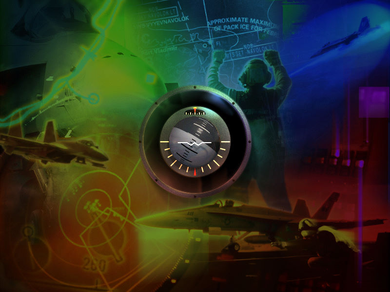
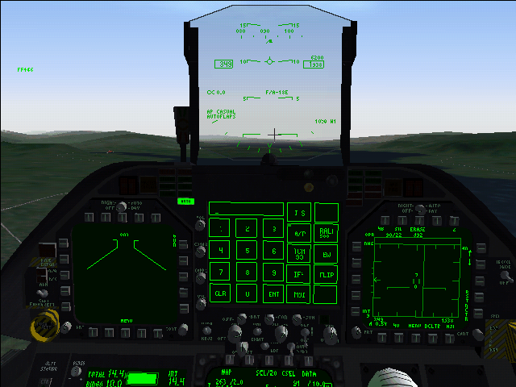

名稱：珍氏FA18戰鬥機／簡氏F18戰鬥機／FA18戰鬥機 (Jane's F/A-18／Jane's Combat Simulations: F/A-18 Simulator，英文版) 簡介：EA 2000年出品的飛行戰鬥模擬遊戲 [待補]。

保護：光碟SafeDisc 1.35 備註：安裝完後，記得使用第二片的Patch檔進行1.01版更新。 備註：非安裝移機者，需設定下列Registry（假設安裝目錄在C:\FA-18）： [HKEY_LOCAL_MACHINE\SOFTWARE\Jane's Combat Simulations\F18] [HKEY_LOCAL_MACHINE\SOFTWARE\WOW6432Node\Jane's Combat Simulations\F18] "campaign"="C:\\FA-18\\Campaign" "CDROMPath"="D:\\" "Cockpits"="C:\\FA-18\\Cockpits" "data"="C:\\FA-18\\Data" "InstallType"="2" "Load_Mission"="1" "mission"="C:\\FA-18\\Mission" "MissionName"="" "movies"="C:\\FA-18\\Movies" "music"="C:\\FA-18\\Sound" "objects"="C:\\FA-18\\ncape\\objects" "open_anim"="1" "resource"="C:\\FA-18\\Resource" "sound"="C:\\FA-18\\Sound" "Squadron"="7" "terrain"="C:\\FA-18\\ncape\\" "textures"="C:\\FA-18\\ncape\\objects" "training"="C:\\FA-18\\training\\" "Translations"="C:\\FA-18\\Lng" "WorldName"="ncape" "WorldPath"="C:\\FA-18\\ncape\\" "wrapper"="C:\\FA-18\\Wrapper" 若使用相對目錄.\，則任務結束後會無法回到主畫面，直接結束遊戲。 備註：VirtualBox無法執行，虛擬機請使用VMware。 備註：XP以上系統要設定F18.EXE為Win9x相容。 備註：目前各系統執行狀況如下： 1.VirtuleBox+XP：無法執行。 2.VMware+XP：部份圖形與文字未顯示出來，其餘正常。 3.Win64：搭配dgVoodoo2、DxWnd、dxwrapper等均無法正常執行。 4.VMware+Win98：黑屏，無法顯示。 5.86Box+Win98：正常。 備註：進入任務後，若視角會一直往上，請修改f18keys.ini，刪除下列該行： JOY1_HATUP=CAM_ROTATE_UP 檔案：nocd100.rar = 1.00免光碟 nocd101.rar = 1.01免光碟